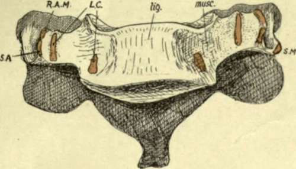
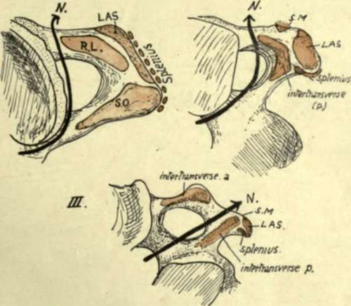

Detailed Consideration Of Cervical Vertebrae
Description
This section is from the book "The Anatomy Of The Human Skeleton", by J. Ernest Frazer. Also available from Amazon: The anatomy of the human skeleton.
Detailed Consideration Of Cervical Vertebrae
The anterior common ligament covers the bodies centrally, and on each side of this are the prevertebral muscles. Take one of the middle members of the series and observe that the central ligamentous area is raised and flattened, while the lateral muscular areas are hollow and extend on to the fronts of the transverse (costal) processes. Also notice that the size relation between the areas is not constant : as we ascend the column the ligamentous area decreases in width, with a corresponding increase in the muscular hollows. This indicates the increasing breadth of the ligament from above downwards and shows plainly how it is only a narrow cord when it reaches the anterior tubercle of the Atlas : because this tubercle is made by the ligament, it has its tip directed downwards.
The observant eye can easily read these facts on the column, to which the ligament is attached strongly in the neighbourhood of the discs, but loosely on the remaining front of the body.
The muscular area, partly on body and mostly on the costal processes, presents roughnesses for the attachment of the vertical portion of Longus colli : the oblique portions of the muscle are inserted into the costal processes, and these usually show ridges for the tendons of the lower oblique part on the front surfaces of the fifth and sixth vertebrae (Fig. 15a). The large upper hollows are occupied by the Rectus anticus major in addition to the Longus colli, and the origin of this muscle by tendon is indicated on the anterior tubercles of 3, 4, 5, and 6 C. V. The Atlas, viewed from the front, presents the largest muscular hollow, altogether occupied by R. anticus major lying on the bone, while the Longus colli comes to its attachment on each side of the base of the anterior tubercle : it has already been seen that the direction of the anterior tubercle is determined by the attachment of the anterior common ligament, but a roughened area on its upper part shows where the anterior occipito-atlantoid ligament continues the line of the common ligament to the skull.
The third, fourth, fifth, and sixth vertebrae are the only ones possessing noticeable anterior tubercles as terminations of their costal processes : these are the only segments that have muscles attached here, and it seems not unlikely that not only the presence of the tubercles, but also their direction, is determined by the muscular attachment. Thus the lower oblique fibres of Longus colli, and the lower strong fibres of Scalenus anticus, are inserted into the anterior tubercles of 5 and 6 C. V., and their downward pull, only antagonised by the lower fibres of R. anticus major, may account for the fact that these tubercles are at a lower level with regard to the transverse element than are those of 3 and 4 C. V. In the latter vertebrae the upward pull is by stronger fibres of the anterior Rectus and the upper oblique fibres of Longus colli, only antagonised by weak upper fibres of Scalenus anticus. The downward direction of the brachial nerves may also affect the fifth and sixth processes. The Rectus and the upper oblique fibres are frequently fused at their attachments, so that no separate markings are found on the bone ; but occasionally separate markings are seen for the oblique fibres, internal to the tubercle. Observe that the posterior tubercles project beyond the level of the articular masses, whereas the anterior ones do not do so.
Fig. 15A.-Sixth cervical vertebra from the front, showing the raised ligamentous area {lig.) and depressed muscular area (muse). Muscle attachments: SA, Scalenus anticus; RAM, Rect. ant. major; LC, Longus colli; SM, Scalenus medius.
Fig. 15B.-Upper aspects of transverse processes of first three cervical vertebra*, showing their muscular attachments and the course of the anterior primary nerve-division in relation to these (N.). KL, Rectus lateralis; LAS, Lev. ang. scapula?; SO, Sup. oblique; SAf, Scalenus medius. Observe that in III. there are two intertransverse muscles with the nerve between them, but in the first two vertebra? only one (post.) is present (HL in I.).
The lateral view of the cervical column discovers differences in the transverse processes below the Axis. They are sufficiently striking from the surface (Fig. 16) and can be summarised as follows. Third vertebra has its costal process small and on an altogether higher level than the true transverse element, a very oblique costotransverse bar, and a very narrow and shallow neural groove.
In the fourth the obliquity is not so marked and the groove is deeper, with a higher anterior tubercle.
In the fifth the costo-transverse bar is more nearly horizontal, and the groove is wider and deeper in correspondence with the larger size of the anterior division of the fifth nerve.
In the sixth the groove is extremely wide, a character that distinguishes this from the other vertebrae, especially when taken in conjunction with its large anterior tubercle, ridged in front. This tubercle is occasionally much increased in size, forming the carotid tubercle or Chassaignac's tubercle.
In the seventh the anterior element is very small and may be incomplete, and has no muscle attachment : the posterior element, on the other hand, is comparatively massive, and roughened at its extremity for the lower scalene and levator costae fibres. It can be appreciated that the small size of the costal element affords room for the vertebral artery to run up to the sixth transverse process : the articulated bones will show that the artery must he just in front of the seventh costal element and the seventh nerve that runs behind it, and therefore immediately lateral to the Longus colli.
Examine the neural groove in any of the middle or lower segments, and notice that the issuing nerve must pass behind the vertebral artery in its course. This is the anterior primary division of the nerve corresponding in number * with the vertebra : the posterior primary divisions arise in the intervertebral foramen and turn back over the transverse element and round the articular process, making a slight groove on the third segment (see Fig. 17).
Continue to:
- prev: Seventh Cervical Vertebra
- Table of Contents
- next: Detailed Consideration Of Cervical Vertebrae. Part 2